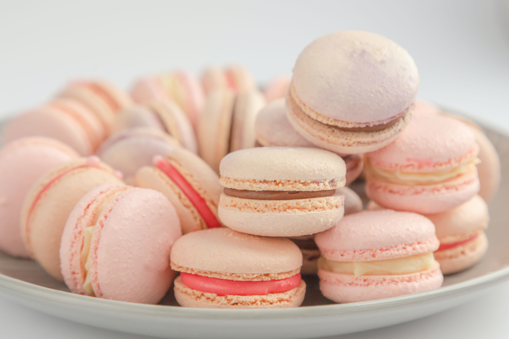

The lemon buttercream will instantly brighten your day!

The most important tip for perfect macarons is to use cream of tartar as the stabilizer for the egg whites instead of salt. Salt gives the cookies a weird brine flavor. Also, it is important to let the piped macaron batter to rest for 40-60 minutes until they are dry to touch before baking in the oven.
To get the raspberry tartness in the macarons, I crush up freeze-dried raspberries into a powder and sift out the seeds. I use Natierra brand freeze-dried raspberries that can be found at most Whole Food locations. I also dust the macarons with freeze-dried raspberries powder immediately after they come out of the oven for an extra burst of flavor and beauty.
Ingredients
Dry Ingredients
- 1¾ cups powdered sugar
- 1 cup almond flour, finely ground
- ⅛ tsp cream of tartar
- ~1 tbsp freeze-dried raspberry powder, seeds removed
Wet Ingredients
- 3 egg whites, at room temperature
- ¼ cup granulated sugar
- ½ tsp pure vanilla extract
- red/pink food coloring
Lemon Buttercream
- 6 tbsps unsalted butter, room temperature
- 1½-2 cups powdered sugar
- 1 tsps pure vanilla extract
- 3 tbsps fresh lemon juice
- zest of 1 lemon
Make the macarons:
- Sift the powdered sugar, almond flour, and freeze-dried raspberries through a fine-mesh sieve into a large bowl and mix to combine.
- In a separate large bowl, beat the egg whites> and the cream of tartarwith an electric hand mixer until soft peaks form. Gradually add the granulated sugar until fully incorporated. Continue to beat until stiff peaks form - you should be able to turn the bowl upside down without anything falling out.
- Add the vanilla extract and beat until incorporated. Add the food coloring and beat until just combined.
- Add about ⅓ of the sifted almond flour mixture at a time to the beaten egg whites and use a spatula to gently fold until combined. After the last addition of almond flour, continue to fold slowly until the batter falls into ribbons and you can make a figure 8 while holding the spatula up.
- Transfer the macaron batter into a piping bag fitted with a round tip.
- Place 4 dots of the batter in each corner of a rimmed baking sheet, and place a piece of parchment paper over it, using the batter to help adhere the parchment to the baking sheet.
- Pipe the macarons onto the parchment paper in 1½-inch (3cm) circles, spacing at least 1-inch (2cm)apart.
- Tap the baking sheet on a flat surface 5+ times to release any air bubbles.
- Let the macarons sit at room temperature for 40-60 minutes until dry to the touch.
- Preheat the oven to 300°F. Do not use the convection baking mode.
- Bake the macarons for 17 minutes, until the feet are well-risen and macarons don't stick to the parchment paper.
- Transfer the macarons to a wire rack to cool completely before filling.
- (optional) Lightly dust half of the macarons with sifted freeze-dried raspberry powder while the macarons are still hot.
Make the buttercream:
- In a large bowl, beat the butter with vanilla extract until light and fluffy - about 2 minutes.
- Add the lemon juice, lemon zest, and powdered sugar and continue to beat until light and fluffy - about 1 more minutes.
- Transfer to a piping bag and refrigerate for 10-15 minutes to solidify slightly.
Assembly
- Add a dollop of buttercream to one macaron shell. Top it with another macaron shell to create a sandwich. Repeat with remaining macaron shells and buttercream.
- Place macarons in an airtight container in the fridge for 24 hours to "bloom".